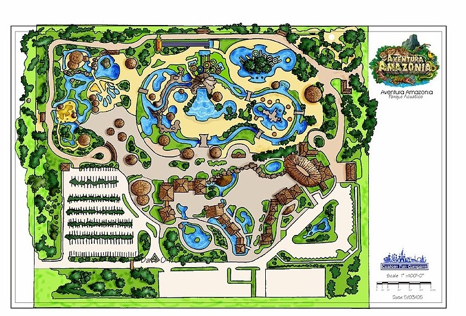

<div class="main-page">
    <!-- Contenedor superior transparente -->
    <header class="transparent-header">
      <div class="header-content">
        <!-- Imagen izquierda -->
        <div class="header-image">
          
        </div>
        
        <!-- Título central -->
        <h1 class="header-title">Mi Página Principal</h1>
        
        <!-- Botón que abre modal -->
        <button class="modal-button" (click)="showModal = true">Abrir Modal</button>
      </div>
    </header>
    
   <!-- Carrusel mejorado -->
  <div class="carousel-container">
    <div class="carousel">
      <div *ngFor="let image of carouselImages; let i = index" 
           class="slide" 
           [class.active]="i === currentIndex"
           [style.background-image]="'url(' + image + ')'">
      </div>
    </div>
    
    <!-- Controles del carrusel -->
    <button class="carousel-control prev" (click)="prevSlide()">‹</button>
    <button class="carousel-control next" (click)="nextSlide()">›</button>
    
    <!-- Indicadores -->
    <div class="indicators">
      <span *ngFor="let image of carouselImages; let i = index" 
            [class.active]="i === currentIndex"
            (click)="goToSlide(i)"></span>
    </div>
  </div>

  <!-- Modal (manteniendo tu estructura original) -->
  <div *ngIf="showModal" class="modal-overlay">
    <!-- ... tu modal existente ... -->
  </div>
</div>